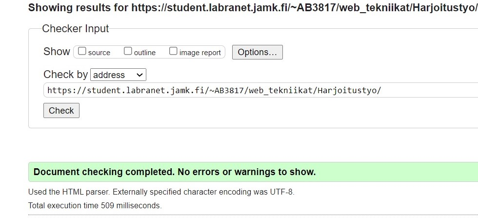
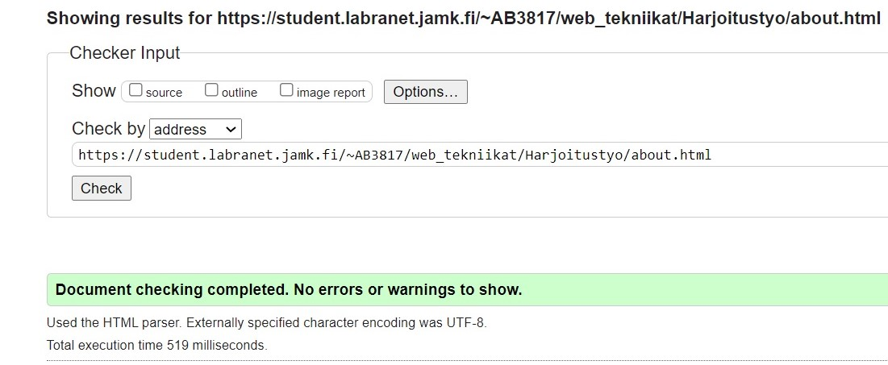
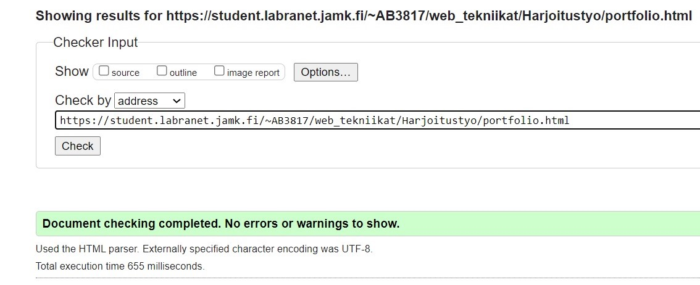
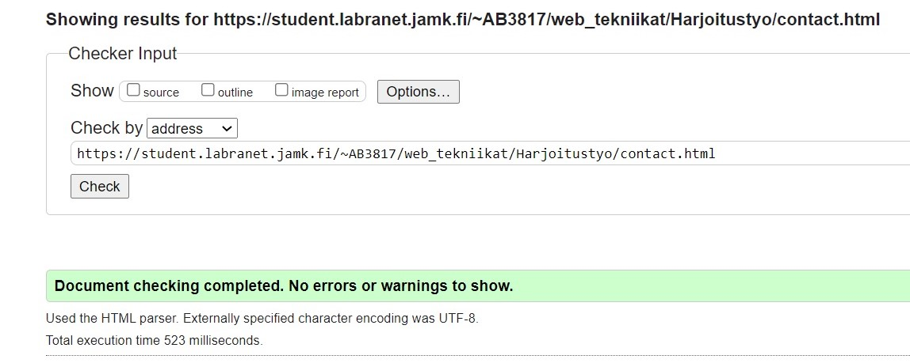

Testaustulokset selaimilla
Firefox (versio 88.0.1)
- Sivusto kehitetty Firefoxilla.
- Firefox -selaimella sivusto näyttää juuri siltä kuin pitääkin.
- Asettelu on juuri sitä mitä haettu kehittäessä.
- Jokainen sivuston osa skaalautuu hyvin pienennettäessä ruutua aina mobiilinäkymään asti.
- Kuvat ja videot renderöi hyvin ilman ongelmia.
- Fontit, iconit, scriptit kaikki toimii kuten pitääkin.
- Linkit toimii kuten pitääkin.
Chrome (versio 90.0.4430.212)
- Sivustoa tarkasteltu jatkuvasti myös Chrome -selaimella vaikka kehitetty firefoxilla.
- Etusivun header eli nimi ei ole aivan samalla paikalla kuin Firefoxilla. Syy ilmeisemmin johtuu Firefoxin eriävästä oletus zoomausprosentista.
Ero ei ole järin suuri, mutta on kuitenkin.
- Skaalautuvuus hyvä aina mobiilinäkymään asti.
- Kuvat ja videot renderöi moitteetta.
- Fontit, iconit, scriptit kaikki toimii kuten pitääkin.
- Linkit toimii kuten pitääkin.
Edge (versio 90.0.818.66)
- Etusivun header eli nimi ei ole aivan samalla paikalla kuin Firefoxilla. Syy ilmeisemmin johtuu Firefoxin eriävästä oletus zoomausprosentista.
Ero ei ole järin suuri, mutta on kuitenkin.
- Skaalautuvuus hyvä aina mobiilinäkymään asti.
- Kuvat ja videot renderöi moitteetta.
- Fontit, iconit, scriptit kaikki toimii kuten pitääkin.
- Linkit toimii kuten pitääkin.
Opera (versio 76.0.4017.123)
- Etusivun header ei Operallakaan ole samassa paikassa kuin Firefoxilla, kuten muillakin selaimilla.
- Skaalautuvuus hyvä aina mobiilinäkymään asti.
- Kuvat ja videot renderöi moitteetta.
- Fontit, iconit, scriptit kaikki toimii kuten pitääkin.
- Linkit toimii kuten pitääkin.
Mobiililaitteet (puhelin ja tablet Chrome-selaimella)
- Vaikka sivustoa ei ole "Optimoitu" mobiililaitteille niin silti perinteisillä skaalautuvilla menetelmillä sivusto on oikein miellyttävä
käyttää mobiililaitteilla.
- Sivustolla on :hover efektejä, mutta mobiililaitteet viisaita siinä ja jos hover -elementtiä klikkaa niin se on yhtä kuin
mousehover. Eli myös hoverilla näkyvät elementit toimivat ihan ok.
- Tabletilla sivusto on yllättävänkin miellyttävä käyttää ja kaikki toimii kuten pitääkin.
- Puhelimella varsinkin tekstit voisi olla paremmin optimoituja, mutta jälleen kun sivustoa ei varsinaisesti ole suunniteltu mobiilinäkymälle
niin mielestäni sivusto ihan miellyttävä myös puhelimen näytölle.
W3S validaattorin tulokset
Validaattorin antamat virheet kehityksen aikana
- Kehitystyön aikana tuli useasti virheitä ja varoituksia, mutta niistä oppineena ja ne korjanneena loppua kohden
virheitä ei ole ollut säännöllisillä tarkastuksilla. Yleisesti ottaen virheet mitä on ollut ovat olleet ihan pieniä
mm. ul -tagin sisällä ei voi käyttää muita tageja kuin li yms. ja 90% niistä ollut opintojakson alussa kun
alkoi harjoitustyön ensimmäistä vedosta rakentamaan. Virheitä joista on ollut helppo oppia ja kun sivuja on kehitysvaiheessa
ajanut jokaisen suuremman etapin jälkeen validaattorin läpi niin virheiden määrä on aina ollut hyvin pieni ja helposti lähestyttävä ja korjattava.
- Myöskin jatkuva tiedonhaku internetistä miten minkälaisiakin elementtejä ja asioita websivuille saa rakennettua on valjastanut tähän
hyvään validiin lähestymistapaan rakentaa koodia ja työskennellä.
Frontpage/index
- Index -sivulle validaattori ei anna virheitä eikä varoituksia.
- Overlay -menu on osa kaikkia sivuja, joten siitäkään ei varoituksia erikseen tule.
- CSS -tyylitiedostot virheettömiä myös. Niistä ei kuitenkaan nyt kuvia.

About
- About -sivulle validaattori ei anna virheitä eikä varoituksia.
- CSS -tyylitiedostot virheettömiä myös. Niistä ei kuitenkaan nyt kuvia.

Portfolio
- Myöskään portfolio -sivulle validaattori ei anna virheitä eikä varoituksia.
- CSS -tyylitiedostot virheettömiä myös. Niistä ei kuitenkaan nyt kuvia.

Contact
- Myöskään contact -sivulle validaattori ei anna virheitä eikä varoituksia.
- CSS -tyylitiedostot virheettömiä myös. Niistä ei kuitenkaan nyt kuvia.
